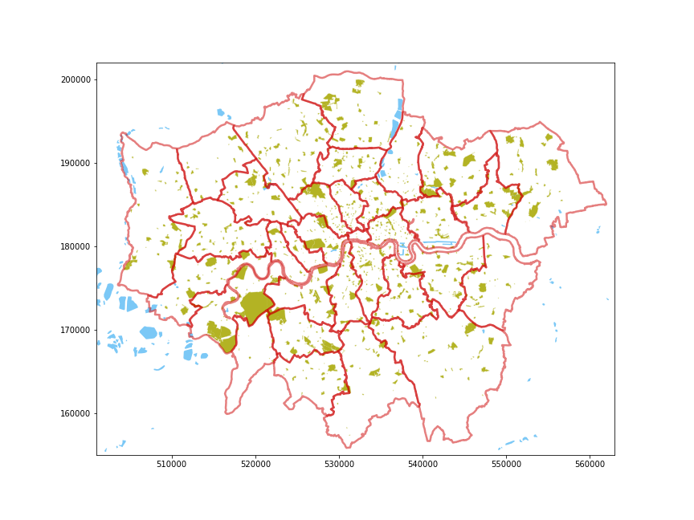
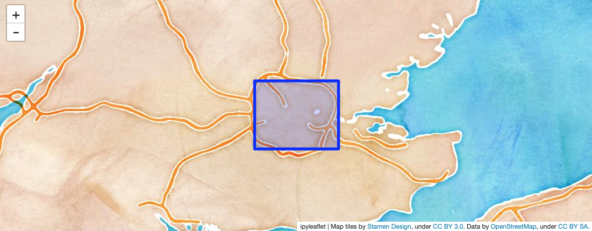
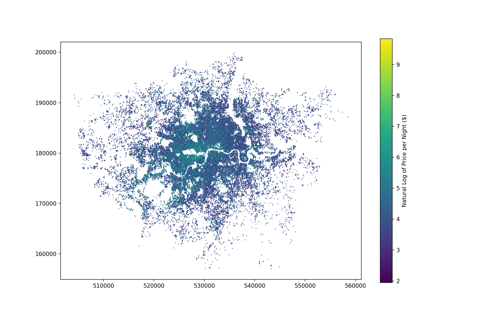
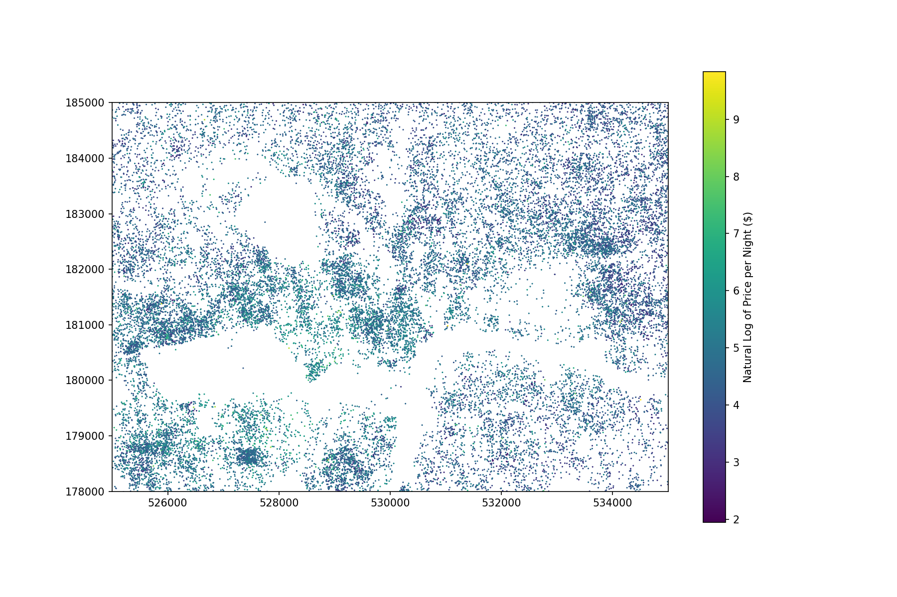
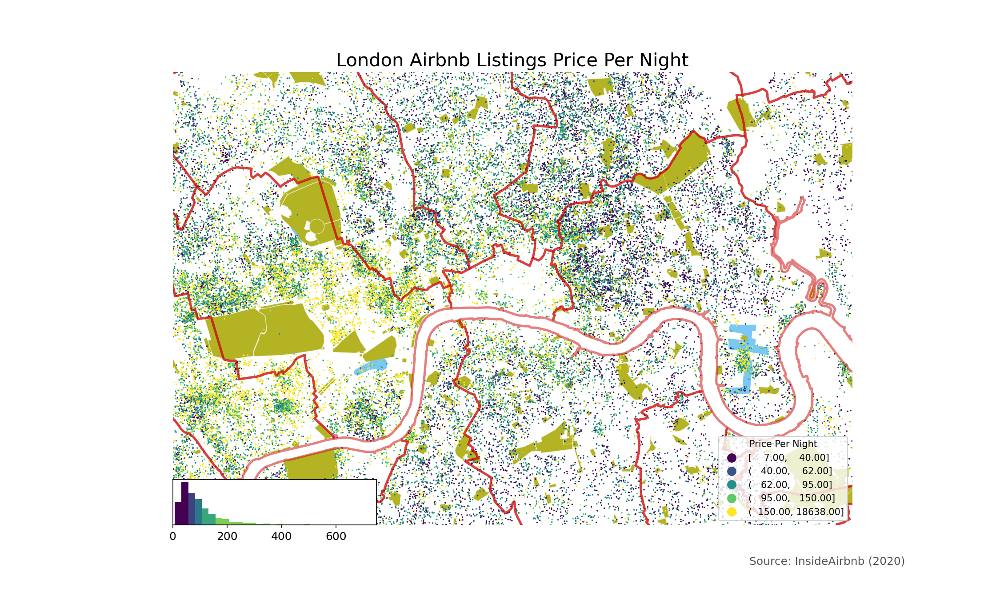

Practical 5: Spatial Data
Getting to grips with Geo-Data using Geopandas
Preamble¶
import os
import numpy as np
import pandas as pd
import geopandas as gpd
import matplotlib.cm as cm
import matplotlib.pyplot as plt
1. Reading Geo-Data¶
I find GeoPackages to be by far the easiest way to distribute geo-data now: they are a single file (in a database-like format that supports multiple types of data), include the projection information by default, and QGIS can even embed information about rendering style!
However, we're getting a bit ahead of ourselves; let's start by writing a function (it will be similar to the get_url function in dtools) to download the file to our hard drive and save it there. That way we don't have to keep downloading it week after week. I've set up the basics, but you'll need to Google download remote file python. If you're not sure about what something in this function does, I'd suggest that you use return statements to short-circuit the processing and print statements to output the various variables that I derive (e.g. print(os.path.split(url.path)) and then add [-1] to see what that gives you or print(url) to see what that is!).
Task 1.1: Add Comments to Function¶
I've used the Numpy-style comments here, but the Google-style also look good in this context. See overview of commenting styles on DataCamp.
import os
from requests import get
from urllib.parse import urlparse
def cache_data(src:str, dest:str) -> str:
url = urlparse(src) # We assume that this is some kind of valid URL
fn = os.path.split(url.path)[-1] # Extract the filename
dfn = os.path.join(dest,fn) # Destination filename
if not os.path.isfile(dfn):
print(f"{dfn} not found, downloading!")
path = os.path.split(dest)
if len(path) >= 1 and path[0] != '':
os.makedirs(os.path.join(*path), exist_ok=True)
with open(dfn, "wb") as file:
response = get(src)
file.write(response.content)
print("\tDone downloading...")
else:
print(f"Found {dfn} locally!")
return dfn
Task 1.2: Read Remote Geo-Data¶
Use the function above to download and cache the GeoPackage files found on GitHub for Boroughs, Water, and Greenspace, then pass the output of these to GeoPandas. If you have been having trouble downloading files from GitHub, then use the understanding of the function developed above to download the file manually and place it where this function expects to find it!
ddir = os.path.join('data','geo') # destination directory
spath = 'https://github.com/jreades/i2p/blob/master/data/src/' # source path
boros = gpd.read_file( cache_data(spath+'Boroughs.gpkg?raw=true', ddir) )
water = gpd.read_file( cache_data(spath+'Water.gpkg?raw=true', ddir) )
green = gpd.read_file( cache_data(spath+'Greenspace.gpkg?raw=true', ddir) )
print('Done.')
Task 1.3: Check the Projection¶
Check the projection of each GeoDataFrame using a for loop and the crs attribute.
You should see that all three are in the EPSG:27700 CRS which is a common one for analysis using GB data.
Task 1.4: Check the Data¶
We'll see how you control figure-making more effectively later, but for now let's just see what they look like using plot:
2. An Introduction to Mapping¶
These files all contain polygons, and the adjustments for points are different, but it's worth seeing how you can tweak these before we start combining them. Behind the scenes, GeoPandas is using matplotlib to render the map, so let's play with the colours to get the start of something map-like.
I'd suggest the following colour scheme (though anything you like is fine so long as you manipulate the colours):
- The boroughs can have red edges and white fill with a thick edge.
- The water should have no edges and XKCD Lightblue fill.
- The greenspace should have edges and faces specified using different alpha blending levels.
You will want to look both at how to make maps in GeoPandas and at the different ways to specify colours in Matplotlib. For the greenspace map you are looking for information about tuples... which can have three or four elements.
Task 2.1: Adjust Borough Display¶
By way of a hint, matplotlib uses edgecolor and facecolor for controlling 'patches' (which is what polygons are considered), but the thicker-than-default line-width is specified differently (you'll need to look this up). So the intention is:
- Thick red borough borders, and
- White fill colour.
Just to drive home how different this is from R, you can find the answer to question 1 on the page for bar plots.
boros.plot(??)
Task 2.2: Adjust Water Display¶
The process is the same as above, but I'd like you to work out how to specify:
- No color for an edge, and
- An XKCD color for the face.
water.plot(??)
Task 2.3: Adjust Greenspace Display¶
The process is also the same as above, but I'd like you to work out how to specify colours and transparency using RGBA (red-green-blue-alpha) tuples. So we're looking for:
- No edge color.
- A partially transparent green specified as a tuple.
green.plot(??)
Task 2.4 Combining Layers¶
Now that we've got our layers looking roughly how we want them, it's time to combine them. This is also reliant on matplotlib and basically involves plotting items to shared axes which is done by passing in ax=<axis object> to each plot(...). By convention, if you only have a single figure (e.g. a single map) then you create an axis object and name it ax so you will see a lot of ax=ax code in graphing libraries, but =ax is just saying 'assign to the axis object that I created'.
Since the axes are how you control what is shown, see if you can find out by Googling how to set the x- and y-limits on the map so that it shows only London and trims out the much larger area of water that is outside of the Greater London Authority. As a rough guideline, this has the Easting range 501,000 to 563,000, and the Northing range 155,000 to 202,000.
You can set these limits before or after you start adding layers to the 'map', but it's probably easier conceptually to add them after with the idea of 'zooming in' on the features of interest. It's also easier to debug since you can start by seeing if you can plot the elements at all, and then add the limits to zoom.
So the steps are:
- Write the code to plot every image on the same set of axes (I've given you something to get started).
- Google how to set the limits of the map and then use the ranges I've offered above.
- Work out how to change the width of the edges for the boroughs layer.
- Save it somewhere local so that you could, say, load it into a Markdown file!
fig, ax = plt.subplots(1,1, figsize=(12,9))
# Plot all three to the same axes
# Set the limits
You may wish for a different look, but here's one version of the output:

3. 'Creating' Geo-Data¶
Of course, you will also often encounter geo-data that is not yet 'geographically enabled'; the two most frequent contexts for this are:
- The data represents points and is provided with latitude and longitude (or similar) as separate columns in a non-geographic data set.
- The data represents polygons but is provided separately from the polygons themselves and so cannot be shown on a map without being 'joined' to the geography first.
We'll tackle each of these eventually, but for now we're going to focus on the first option.
Task 3.1: CSV to Pandas¶
Let's re-use our cache_data function to download and save the full InsideAirbnb data set. Again, if you have trouble with downloading from GitHub via code, use your understanding of the function to work out where to save your own copy of this file so that the function works as expected.
ddir = os.path.join('data','raw') # destination directory
spath = 'https://github.com/jreades/i2p/blob/master/data/src/' # source path
# pdf == pandas dataframe
pdf = pd.read_csv( cache_data(spath+'2020-08-24-listings.csv.gz?raw=true', ddir),
compression='gzip', low_memory=False)
# Free up memory (we're going to reload below)
del(pdf)
Task 3.2: Subsetting and Tidying Data Set¶
Now that we've downloaded the large file, let's subset only what we need for the purposes of this practical as it will make things run a lot faster.
cols = ['id','listing_url','price','latitude','longitude',
'host_id','host_since','property_type','room_type',
'accommodates','beds','bathrooms_text']
pdf = pd.read_csv( ?? )
print(f"pdf now contains {pdf.shape[0]} rows.")
pdf.info()
Your pandas data frame should contain 74,188 rows and 11 columns.
Convert the price to a float
pdf['price'] = ??
Drop the rows where the id is null:
pdf.drop( ?? )
print(f"pdf now contains {pdf.shape[0]} rows.")
Drop the rows where the geo-data is likely to be problematic:
pdf.drop( ?? )
pdf.drop( ?? )
print(f"pdf now contains {pdf.shape[0]} rows.")
Task 3.3: Checking Lat/Long¶
Before we mindlessly convert to something map-able it might make sense to sanity-check the data that's left as we already know that there were some NaN values in the lat/long coordinates. In GeoPandas we have a total_bounds method that gives us the bounding box for a GeoSeries, but how would we do that in Pandas?
print(f"The bottom-left corner is {??}, {??}")
print(f"The top-right corner is {??}, {??}")
Your answer should be:
The bottom-left corner is -0.49625, 51.29479
The top-right corner is 0.2845, 51.68169Task 3.4: Embedding Web Maps¶
This is more for the sake of demonstrating Python's features than because it's part of my workflow, but what the heck, let's do it! We will create and embed a zoomable web map in the notebook; to do that we need to:
- Calculate the bounds of the map using the min/max x and y coordinates above.
- Calculate the centroid of the map from the bounds.
- Set an appropriate zoom level.
If your work is going well, perhaps you may also want to experiment with different basemaps.
from math import ??, ??
# Calculate min and max to two decimal points
xmin = ??
xmax = ??
ymin = ??
ymax = ??
print(xmin, xmax, ymin, ymax)
# Calculate the centre of the map
yctr = ??
xctr = ??
print(xctr, yctr)
You should end up with -0.5 0.29 51.29 51.69 for print(xmin, xmax, ymin, ymax), and 51.4899999... and -0.109999... for yctr and xctr.
If you've managed the calculations above, then this code should simply run!
from ipyleaflet import Map, basemaps, basemap_to_tiles, Rectangle, projections
# Note the basemap can be easily changed
watercolor = basemap_to_tiles(basemaps.Stamen.Watercolor)
m = Map(layers=(watercolor, ), center=(yctr, xctr), zoom=8)
rectangle = Rectangle(bounds=( (ymin, xmin), (ymax, xmax) ),
crs=projections.EPSG4326
)
m.add_layer(rectangle)
m
Your map should look like this:

Task 3.5: Lat/Long to GeoSeries¶
Right, we're finally there! We need to convert our coordinates into some kind of geo-data. GeoPandas offers two ways to do this: the original way using zip and a new utility method called points_from_xy. Here's the old way:
from shapely.geometry import Point
gdf = gpd.GeoDataFrame(df,
geometry=[Point(x,y) for x, y in zip(df.Longitude,df.Latitude)])
Note, however, that this did not automatically set a projection, unlike the new approach with the helper method:
gdf = gpd.GeoDataFrame(pdf,
geometry=gpd.points_from_xy(pdf['longitude'], pdf['latitude'], crs='epsg:4326'))
print(type(gdf))
print(type(gdf.geometry))
print(gdf.geometry.iloc[1]) # Print out the object's contents
gdf.geometry.iloc[1] # The object knows how to print itself as a point
Task 3.6: Saving Geo-Data Locally¶
Since there are many formats in which to save geo-data, rather than have multiple to_format_x methods, GeoPandas has one for local files (to_file) and requires you to specify a driver as part of the process. For educational purposes, try running the code below without specifying a driver and then have a look at what has happened on your hard drive... then delete that output and re-run the code with an appropriate driver. Google this if necessary.
boros.to_file('test.gpkg') # This won't do what we want
Save the InsideAirbnb GeoDataFrame to the 'geo' directory:
print(str(boros.geometry.iloc[1])[:399] + "...") # Object to string then print out first 399 characters
boros.geometry.iloc[1] # So this is a multi-polygon boundary
So each element of this Series has text indicating the type of shape the geometry applies to (e.g. POLYGON) followed by a bunch of numbers. These numbers are truncated here just to make things a little more legible.
4. Dealing with Projections and Data¶
Task 4.1: Reprojection¶
Let's start by looking at our InsideAirbnb data in its original projection.
print(gdf.geometry.crs)
print(gdf.total_bounds)
gdf.plot(figsize=(12,8), marker='*', color='green', markersize=0.25)
Reproject this into the OSGB1936/BNG CRS and plot again using same code as above:
Task 4.2: Choropleth Mapping¶
In its original form, the pricing data will not reveal much of interest because of the range of the data. However, if we take the log of the price data then we may get something of a useful choropleth. That said, if you intend to make use of the pricing data I would suggest that you do some exploration of the outliers, especially the upper ones!
print(f"The range of price is ${??:,.2f} to ${??:,.2f}")
print(f"The mean and median of the price are ${??:,.2f} and ${??:,.2f}")
Notice the neat little commad-separated thousands in there? That's fairly easy to do in English, but to use a thousands separator common to another language you would need to do something a little more tricky.
Anyway, I'd like you to:
- Take the natural-log of the price and assign to a new Series called
lnprice. - Work out what the error means.
- Work out how to fix the error based on what we did above.
- Work out how many rows were affected.
- Report on the new min/max values.
You should get that the ln(price) range is 1.95 to 9.83 and the number of rows is 74,178.
Now plot the ln(price) as a choropleth using:
- A figure size of 12 x 8
- A marker size of 0.25
- The Viridis colourmap
- A legend
- A legend label of 'Natural Log of Price per Night ($)'
I'd suggest referring to the documentation.
Your map should look something like this:

Task 4.3: Zooming In/Out¶
That's a little hard to see, let's try zooming in on Central London! Very roughly, let's call that an Easting range of 525,000 to 535,000 and a Northing range of 178,000 to 185,000.

That's a little better, but ideally we'd do a lot more thinking about outliers...
Task 4.4: Recall!¶
Remeber that GeoPandas inherits functionality from Pandas. First, let's check what data type gdf is using the isinstance function:
if isinstance(gdf, gpd.GeoDataFrame): # Is gdf a GeoDataFrame object?
print("\tI'm a geopandas data frame!")
if isinstance(gdf, pd.DataFrame): # Is gdf *also* a DataFrame object?
print("\tI'm also a pandas data frame!")
In which case we can...
gdf.price.plot.box()
gdf.lnprice.plot.box()
Task 4.5: Changing the Classification Scheme¶
Let's give this one last try using a different classification scheme... such as Fisher-Jenks!
Task 4.6: Bringing it All Together¶
And just to give a bit of a show of how we can put it all together:
help(legendgram)
import pysal as p
import mapclassify as mc
import palettable.matplotlib as palmpl
from legendgram import legendgram
q = mc.Quantiles(gdf.price.values, k=5) # For Fisher Jenks you may want 'Sampled' to speed things up
f,ax = plt.subplots(figsize=(15,9))
water.plot(edgecolor="none", facecolor='xkcd:lightblue', ax=ax)
green.plot(edgecolor=(0.7, 0.7, 0.14, 0.25), facecolor=(0.7, 0.7, 0.14), ax=ax)
gdf.plot(column='price', scheme='Quantiles', k=5,
cmap='viridis', legend=True, marker='*', markersize=0.5, ax=ax)
boros.plot(edgecolor=(0.8, 0, 0, 0.5), facecolor='none', linewidth=2.5, ax=ax)
ax.set_xlim([525000,540000])
ax.set_ylim([176000,186000])
ax.axis('off') #don't plot the axes (bounding box)
ax.set_title('London Airbnb Listings Price Per Night', fontdict={'fontsize':'20', 'fontweight':'3'}) #provide a title
a = ax.annotate('Source: InsideAirbnb (2020)',
xy=(0.905, 0.055), xycoords='figure fraction',
horizontalalignment='right', verticalalignment='bottom',
fontsize=12, fontweight=4, color='#555555') #add source info on the image itself
a.set_bbox(dict(facecolor='white', alpha=0.95, edgecolor='white'))
ax.get_legend().set_title("Price Per Night") #set the legend title
legendgram(f, ax,
gdf.price, q.bins, bins=round(gdf.price.max()/25),
pal=palmpl.Viridis_5,
legend_size=(0.3, 0.1),
loc='lower left',
clip=(0,750),
frameon=True
)
f.savefig('ppn.png', dpi=150)
You should have something like this:

I'll be honest, I do find ggplot easier for making good-quality; this is more customisable overall, but it's also much more 'magical' in the sense of 'search for matplotlib examples that do what you want then copy+paste them and tweak' being the main way that most people get things working how they want.
Scalebars are awkward, though I did discover that there's now a library that can help with this on GitHub. Unfortunately, as this is not part of the default image, while you can install it on a per-session basis you will lose it each time you restart Vagrant/Docker.
Getting More Help/Applications¶
A great resource for more help and more examples is Dani Arribas-Bel's Geographic Data Science module: he has put all of his module practicals online (as we have too), and you might find that something that he does makes more sense to you than what we've done... check it out!
Credits!¶
Contributors:¶
The following individuals have contributed to these teaching materials: Jon Reades (jonathan.reades@kcl.ac.uk), James Millington (james.millington@kcl.ac.uk)
License¶
These teaching materials are licensed under a mix of The MIT License and the Creative Commons Attribution-NonCommercial-ShareAlike 4.0 license.
Acknowledgements:¶
Supported by the Royal Geographical Society (with the Institute of British Geographers) with a Ray Y Gildea Jr Award.
Potential Dependencies:¶
This notebook may depend on the following libraries: pandas, matplotlib, seaborn